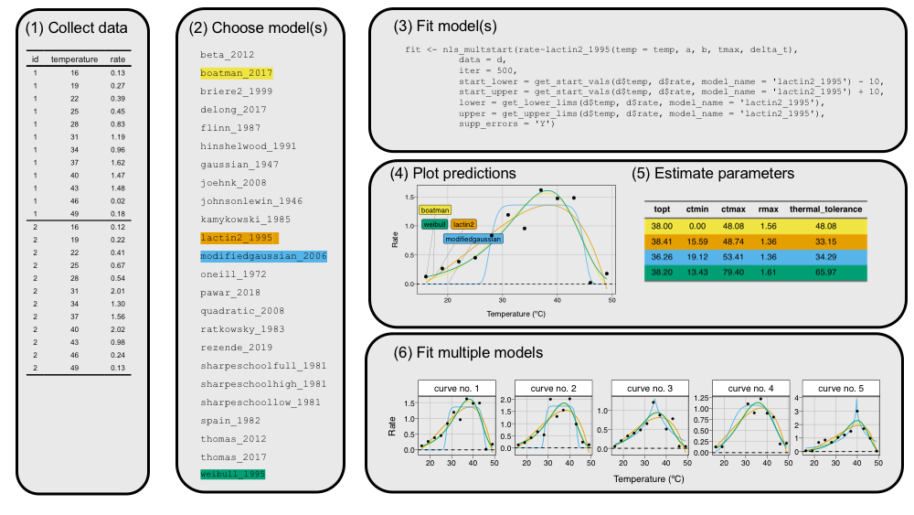

rTPC is an R package that helps fit thermal performance curves (TPCs) in R. rTPC contains 23 model formulations previously used to fit TPCs and has helper functions to help set sensible start parameters, upper and lower parameter limits and estimate parameters useful in downstream analyses, such as cardinal temperatures, maximum rate and optimum temperature.
The idea behind rTPC is to make fitting thermal performance curves easier, to provide workflows and examples of fitting TPCs without saying which models work best. Which model and which workflow is “best” is going to be down to the question that is being asked. Throughout the vignettes, Things to consider sections give ideas of what need to be considered about before the analysis takes place.
When developing rTPC, we made a conscious decision not to repeat code and methods that are already optimised and available in the R ecosystem. Consequently, the workflows take advantage of nls.multstart for fitting non-linear least squares regression and packages from the tidyverse for data manipulation, fitting multiple models, and visualisation.
rTPC and the pipelines outlined in the vignettes are in the process of being written up into a methods paper. In the meantime, please cite as:
Daniel Padfield and Hannah O’Sullivan (2020). rTPC: an R package for helping fit thermal performance curves. R package version. 0.1.0.
Bugs and suggestions
Please report any bugs and suggestions to the Issues or email d.padfield@exeter.ac.uk.
Installation
rTPC can easily be downloaded from GitHub using the remotes::install_github(). The vignettes available with the package can be downloaded by adding build_vignettes = TRUE.
# install package from GitHub remotes::install_github("padpadpadpad/rTPC", build_vignettes = TRUE)
General pipeline
rTPC makes it easy to fit multiple models to multiple thermal performance curves.

Figure 1. General pipeline for fitting thermal performance curves using rTPC. First, Collect, check, and manipulate data into long format. Next Choose which model from rTPC are going to be used. Here, a random assortment of four models were chosen. Then fit the models to data using nls.multstart and helper functions from rTPC. Model can then be visualised using the tidyverse suite of packages and common traits of TPCs can be estimated using rTPC::est_params(). This simple pipeline can easily be scaled up to be used on multiple curves.
Getting started
- For an introduction to rTPC, see
vignette("rTPC") - To follow the general pipeline, see
vignette("fit_many_models")andvignette("fit_many_curves"). - For examples of extensions to this pipeline, see the
vignette("model_averaging_selection")andvignette("model_weighting").